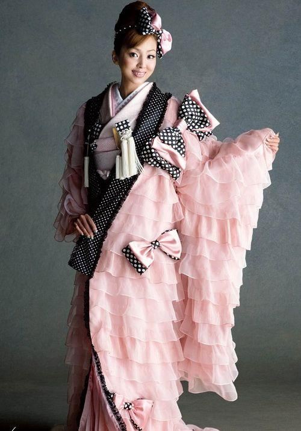

The kimono is a Japanese traditional garment. The word "kimono", which actually means a "thing to wear" (ki "wear" and mono "thing"), has come to denote these full-length robes. The standard plural of the word kimono in English is kimonos, but the unmarked Japanese plural kimono is also sometimes used. The kimono is always used in important festival or formal moments, it is the representative of polite and a very formal clothing.
Kimono has T-shaped, straight-lined robes worn so that the hem falls to the ankle, with attached collars and long, wide sleeves. Kimono are wrapped around the body, always with the left side over the right (except when dressing the dead for burial) and secured by a sash called an obi, which is tied at the back. Kimono are generally worn with traditional footwear (especially zōri or geta) and split-toe socks (tabi).
Today, kimono are most often worn by women and on special occasions. Traditionally, unmarried women wore a style of kimono called furisode, with almost floor-length sleeves, on special occasions. A few older women and even fewer men still wear the kimono on a daily basis. Men wear the kimono most often at weddings, tea ceremonies, and other very special or very formal occasions. Professional sumo wrestlers are often seen in the kimono because they are required to wear traditional Japanese dress whenever appearing in public.
In contrast to women's kimono, men's kimono outfits are far simpler, typically consisting of five pieces, not including footwear.
Men's kimono sleeves are attached to the body of the kimono with no more than a few inches unattached at the bottom, unlike the women's style of very deep sleeves mostly unattached from the body of the kimono. Men's sleeves are less deep than women's kimono sleeves to accommodate the obi around the waist beneath them, whereas on a woman's kimono, the long, unattached bottom of the sleeve can hang over the obi without getting in the way.
Jinbaori - Kimono tabards for armoured Samurai In the modern era, the principal distinctions between men's kimono are in the fabric. The typical men's kimono is a subdued, dark color; black, dark blues, greens, and browns are common. Fabrics are usually matte. Some have a subtle pattern, and textured fabrics are common in more casual kimono. More casual kimono may be made in slightly brighter colors, such as lighter purples, greens and blues. Sumo wrestlers have occasionally been known to wear quite bright colors such as fuchsia. The most formal style of kimono is plain black silk with five kamon on the chest, shoulders and back. Slightly less formal is the three-kamon kimono.